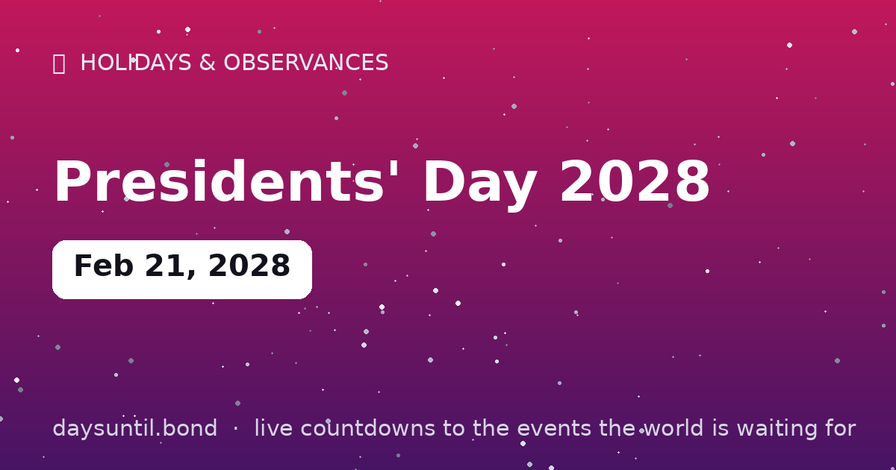

How Many Days Until Presidents' Day 2028?
Presidents' Day 2028 falls on Monday, February 21, 2028.
As of October 24, 2026: 485 days to go — 69 weeks and 2 days, 346 weekdays (139 weekend days), about 11,640 hours.

Quick facts
| Date | Monday, February 21, 2028 |
|---|---|
| Category | Holiday / observance |
About Presidents' Day 2028
Presidents' Day 2028 falls on Monday, February 21, 2028. The third Monday of February, honoring US presidents — born from Washington's Birthday and now best known for mattress sales and a long weekend.
The live counter above updates every second and automatically switches to 'days since' once the day arrives.
Your Presidents' Day 2028 countdown milestones
It is easier to plan against fixed points than against a number that moves. These are the dates on which the countdown to Presidents' Day 2028 passes each marker between now and the day itself — the last one falls on Sunday 20 February, when there will be 1 day left.
| Milestone | Day | Date | Remaining |
|---|---|---|---|
| 365 days | Sunday | 21 February 2027 | 365 days to go |
| 200 days | Thursday | 05 August 2027 | 200 days to go |
| 100 days | Saturday | 13 November 2027 | 100 days to go |
| 50 days | Sunday | 02 January 2028 | 50 days to go |
| 30 days | Saturday | 22 January 2028 | 30 days to go |
| 14 days | Monday | 07 February 2028 | 14 days to go |
| 7 days | Monday | 14 February 2028 | 7 days to go |
| 3 days | Friday | 18 February 2028 | 3 days to go |
| 1 days | Sunday | 20 February 2028 | 1 day to go |
How the remaining time breaks down
485 days is the headline, but it is rarely the number that helps. 346 of those are weekdays and 139 fall on a weekend, which is the split that matters if you are planning around work. It is 69 weeks and 2 days, or roughly 15.9 months, or about 11,640 hours.
| Unit | Until Presidents' Day 2028 |
|---|---|
| Days | 485 |
| Weeks | 69 weeks and 2 days |
| Months (approx) | 15.9 |
| Weekdays | 346 |
| Weekend days | 139 |
| Hours | 11,640 |
| Sleeps | 485 |
Working days are Monday to Friday and do not subtract public holidays, which vary by country and employer — the full month-by-month split is on our weekday page for Presidents' Day 2028.